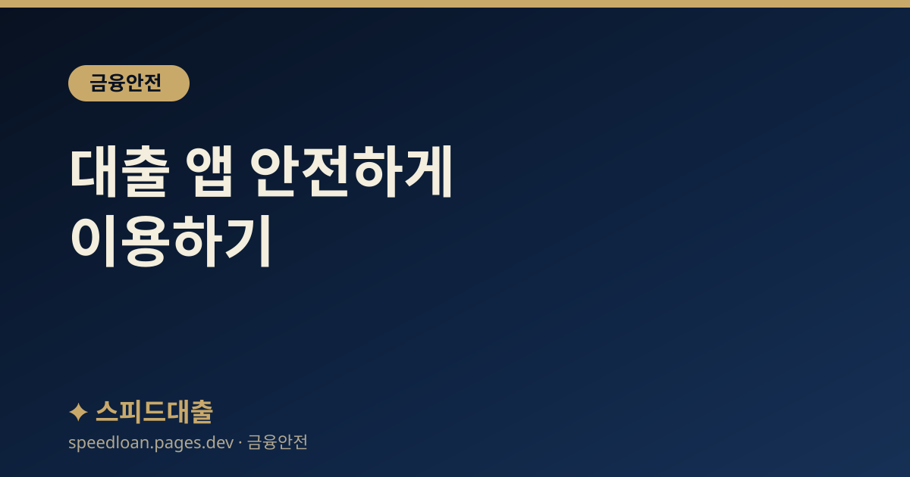

대출 앱 안전하게 이용하기
가짜 대출 앱과 악성 앱을 피하기 위한 설치 전 확인 사항과, 사기 신호가 되는 요구들을 정리했습니다.

가짜 대출 앱의 위험
문자나 메신저 링크로 특정 앱을 설치하게 한 뒤, 그 앱으로 개인정보와 연락처를 빼내거나 휴대폰을 원격으로 조종하는 사기가 늘고 있습니다. 정식 앱처럼 보이도록 로고와 화면을 그대로 흉내 내는 경우가 많아, 겉모습만으로는 진짜와 구별하기 어렵습니다.
이렇게 설치된 악성 앱은 문자·통화 내용을 가로채거나, 저장된 연락처로 사기 문자를 다시 퍼뜨리는 통로가 되기도 합니다. 심한 경우에는 전화 착신을 몰래 돌려, 이용자가 은행에 확인 전화를 걸어도 사기범에게 연결되도록 만드는 사례까지 보고됩니다. 따라서 '어디서 받은 앱인가'가 안전의 첫 번째 기준이며, 조금이라도 이상하면 앱을 지우고 확인하는 것이 안전합니다.
정상적인 금융회사의 앱은 심사와 실행을 앱 안에서 처리하며, 상담 직원이 이용자의 휴대폰을 직접 조작하거나 별도의 앱을 추가로 깔라고 요구하지 않습니다. 이 원칙만 기억해도 상당수의 가짜 앱을 걸러낼 수 있습니다.
설치 전 확인 체크리스트
- 앱은 반드시 공식 앱스토어(구글 플레이·앱스토어)에서 개발사와 다운로드 수, 평점을 확인하고 설치합니다.
- 문자·카톡·메일 링크로 받은 설치 파일(APK 등)은 절대 설치하지 않습니다.
- 설치 과정에서 통화·문자·연락처·화면 접근 등 과도한 권한을 요구하면 중단합니다.
- 금융소비자정보포털 '파인'에서 해당 금융회사가 제도권 업체인지 먼저 확인합니다.
- 앱 이름이 유명 금융사와 미묘하게 다르거나, 리뷰가 거의 없고 최근에 급조된 앱은 특히 주의합니다.
이런 요구는 사기 신호입니다
정상적인 대출 심사는 앱 안에서 진행되며, 상담 직원이 당신의 휴대폰을 직접 조작할 필요가 없습니다. 사기범은 '전산 오류가 났다', '한도를 풀어 주겠다'는 식으로 그럴듯한 이유를 붙여 이런 요구를 정당화하려 하지만, 이유가 무엇이든 아래와 같은 요구를 받는다면 진행을 멈추고 의심해야 합니다.
- '상담을 위해' 원격제어 앱(팀뷰어·애니데스크 등) 설치를 요구하는 경우
- 휴대폰 화면 공유나 인증번호·비밀번호 입력을 대신 해 주겠다고 제안하는 경우
- 앱 설치 후 '신용등급 조작'이나 '전산 오류 정정' 명목으로 수수료를 요구하는 경우
- 대출 실행을 조건으로 보증금·선입금을 먼저 보내라고 요구하는 경우
정식 금융회사를 사칭한 것으로 의심되면, 앱이나 문자에 적힌 번호가 아니라 해당 회사의 공식 대표번호로 직접 전화해 확인하세요. 이런 요구를 이미 따랐다면 서둘러 인증 수단을 재발급받고, 금융감독원 1332에 신고해 대응 방법을 안내받는 것이 안전합니다.
앱 권한을 점검하는 방법
악성 앱은 대개 대출과 무관한 과도한 권한을 요구해 개인정보를 빼냅니다. 예를 들어 단순 대출 조회 앱이 문자·통화 기록·연락처 전체에 접근하려 한다면 그 이유를 의심해야 합니다. 설치 후에도 휴대폰 설정에서 앱별 권한을 확인하고, 불필요한 권한은 꺼 두는 것이 좋습니다.
특히 아래 권한은 금융 사기에 악용될 수 있으므로 요구 이유가 분명하지 않다면 허용하지 않는 편이 안전합니다. 일단 허용했더라도 나중에 설정에서 다시 끌 수 있으니, 앱을 쓰지 않을 때는 불필요한 권한을 정리해 두는 것이 좋습니다.
- 문자(SMS) 읽기 권한: 인증번호를 가로채는 데 악용될 수 있습니다.
- 연락처 접근 권한: 저장된 지인에게 사기 문자를 퍼뜨리는 통로가 될 수 있습니다.
- 화면 표시·접근성 권한: 화면을 훔쳐보거나 조작하는 데 악용될 수 있습니다.
- 기기 관리자 권한: 앱 삭제를 막고 휴대폰을 통제하는 데 악용될 수 있습니다.
이미 설치했다면 이렇게 대응하세요
의심스러운 앱을 이미 설치했거나 정보를 입력했다면, 피해가 커지기 전에 신속히 조치하는 것이 중요합니다. 순서대로 차분히 진행하면 됩니다.
- 휴대폰 데이터를 백업한 뒤 초기화하고, 공인된 백신으로 점검합니다.
- 금융 계정 비밀번호를 바꾸고, 어카운트인포로 내 명의 계좌·대출을 점검합니다.
- 명의도용이 의심되면 금융감독원 1332에 신고하고, 명의도용 방지 서비스와 여신거래 안심차단 서비스를 신청합니다.
- 금전 피해가 발생했다면 은행 고객센터·112로 지급정지를 신청하고, 경찰 사이버범죄 신고시스템(ECRM)에도 신고합니다.
- 혼자 판단이 어려우면 금융감독원 1332에 전화해 상황을 설명하고 다음 절차를 안내받습니다.
자주 묻는 질문
공식 앱스토어에 있는 앱은 무조건 안전한가요?
공식 스토어를 이용하는 것이 훨씬 안전하지만, 그것만으로 100% 안전이 보장되지는 않습니다. 개발사 이름, 다운로드 수, 최근 리뷰를 함께 확인하고, 해당 금융회사가 '파인'에 등록된 제도권 업체인지 교차 확인하는 것이 좋습니다. 특히 이름이 유명 금융사와 비슷하지만 개발사가 낯설고 리뷰가 거의 없는 앱은 한 번 더 의심해 보세요.
문자로 온 링크가 진짜 은행 사이트처럼 보입니다.
주소가 진짜와 비슷해 보여도 미묘하게 다른 경우가 많으므로, 문자 속 링크는 누르지 않는 것이 안전합니다. 앱이나 사이트는 즐겨찾기나 공식 스토어를 통해 직접 접속하고, 의심되면 은행 공식 대표번호로 확인하세요. 이미 링크를 눌러 정보를 입력했다면 지체 없이 비밀번호를 바꾸고 금융감독원 1332에 알리는 것이 좋습니다.
원격제어 앱을 왜 그렇게 위험하다고 하나요?
원격제어 앱은 상대가 내 휴대폰 화면을 보고 조작할 수 있게 해 주기 때문에, 이를 통해 인증·이체가 이루어지면 큰 금전 피해로 이어질 수 있습니다. 금융 상담을 이유로 이런 앱 설치를 요구하면 사기로 의심하고 즉시 중단하세요.
대출 앱에 소득·신분증 정보를 입력하는 것은 안전한가요?
제도권 금융회사의 공식 앱이라면 심사를 위해 필요한 정보를 요청할 수 있습니다. 다만 그 앱이 정말 정식 앱인지, 해당 회사가 '파인'에 등록된 업체인지 먼저 확인한 뒤 입력하는 것이 안전합니다. 확신이 서지 않으면 정보를 입력하기 전에 회사 공식 대표번호로 문의하세요.
공식 참고 기관
본 사이트의 콘텐츠는 아래 공공·공식 기관의 공개 자료를 참고하여 작성하며, 구체적인 조건과 최신 제도는 해당 기관에서 직접 확인하시기 바랍니다.
본 사이트는 대출을 직접 제공하거나 중개하지 않으며, 금융상품 가입을 권유하지 않습니다. 모든 정보는 일반적인 참고용이며, 실제 대출 가능 여부, 한도, 금리, 조건은 금융회사 심사와 개인 신용상태에 따라 달라질 수 있습니다.